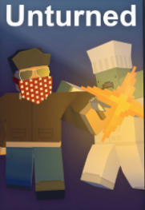
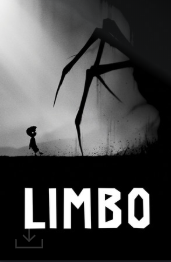

Steam이라는 게임 플랫폼에 있는 여러 가지 게임들을 즐기고 있다.
공포 게임
단순히 놀래키기만 하는 게임이 아니라,
플레이어가 능동적으로 대처할 수 있는 공포 게임이 좋아서
이 게임들을 좋아하게 되었다.
생존 게임
플레이어에게 찾아오는 시련과 그것을 극복해냈을때
얻어지는 일종의 성취감이 생존게임을 하게 만드는 원동력인 것 같다.
퍼즐 게임

[Hacknet]과 [Limbo] 같은 싱글 게임도 있지만,
멀티플레이가 가능한 퍼즐 게임을 할 때 더 즐거웠다.
육성/시뮬레이션 게임
현실과 어느 정도 맞닿아 있으면서도 현실에서
실현하기 힘든 일들을 게임에서 체험해볼 수 있다는 사실이 매력적인 것 같다.